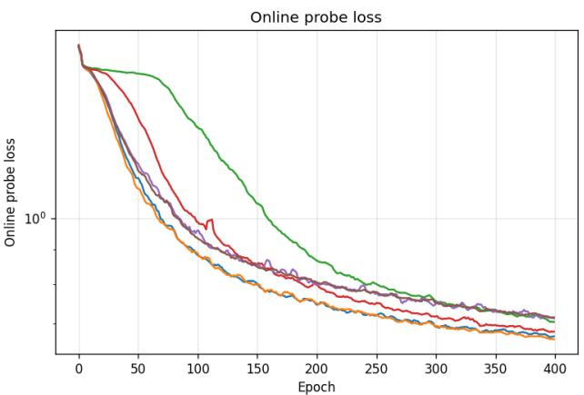

Figureure 1 · : Inet10 single-seed training at the headline configuration $( D = 3 2Figure 1: Inet10 single-seed training at the headline configuration $( D = 3 2 , n = 7 , K = 5 )$ : perepoch linear-probe test accuracy (left) and probe loss (right) across 800 epochs for $\mathrm { L e J E P A } ( \mathcal { L } ^ { \mathrm { S I G R e g } } )$ and $\mathrm { U R - J E P A } ( \mathcal { L } ^ { \mathrm { C G L T } } )$ . The figure complements the peak-accuracy summary of Table 1 by showing the full training dynamics underlying the +0.83 pp headline gap.这张图/表用于判断 UR-JEPA 的实验收益来自哪里。重点看替换、消融或跨模型设置下趋势是否一致，而不是只看单个最高分。

Figureure 2 · : Per-epoch online linear-probe top-1 accuracy (left) and training-regFigure 2: Per-epoch online linear-probe top-1 accuracy (left) and training-regularizer loss $( \mathrm { r i g h t } )$ trajectories on Galaxy10 SDSS, for seed 0 and $D = 3 2$ . Six variants are shown at the matched recipe: $\mathrm { U R - J E P A } ( \mathcal { L } ^ { \mathrm { C G L T } } )$ , UR–JEPA $( \mathcal { L } ^ { \mathrm { C G L T , \partial l o g } } )$ , UR–JEPA $( \mathcal { L } ^ { \mathrm { C G L T } , \partial } )$ , LeJEPA $( \mathcal { L } ^ { \mathrm { S I G R e g } } )$ , UR– JEPA $( \mathcal L ^ { \beta , \gamma } )$ , and $\mathrm { U R - J E P A } ( \mathcal { L } ^ { \beta , \gamma , \tau } )$ . The figure complements Table 5 by showing the full training dynamics that the peak-accuracy summary collapses to a single number.这张图/表用于判断 UR-JEPA 的实验收益来自哪里。重点看替换、消融或跨模型设置下趋势是否一致，而不是只看单个最高分。
核心问题
与 VISReg 构成一组：今天 JEPA 正则化主题从“分布匹配”走向“流形几何”，值得并读。
方法拆解
把 LeJEPA/SIGReg 的 isotropic Gaussian embedding target 改为 uniform n-rectifiable measure，用 Gaussian-kernel smoothed Carleson square function 和 Jones beta-number 约束局部切空间维度。